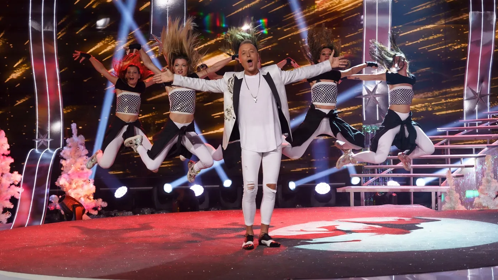

История и участия
От създаването на детската школа в София до фестивалите, професионалната сцена и телевизионните продукции — проверими моменти от историята на Veda Junior.
Свържете се с нас
Началото през 2001 година
Балет Veda Junior е създаден в София през март 2001 г. от хореографите Яна Никова и Оливера Спасова. След опита си с Балет „Веда“ те насочват вниманието си и към обучението на нови поколения танцьори. Детската школа развива модерен балет, модерни и съвременни танци, сценична култура и работа в екип. В интервю за БНР от февруари 2026 г. двете разказват за началото, дисциплината, музикалността и развитието на възпитаниците.
БНР: 25 години Балет Veda Junior — интервю с Яна Никова и Оливера Спасова (2026)
Фестивали, конкурси и отличия
Историческият архив на детската школа включва участия в „Слънце, младост и красота“ в Слънчев бряг, „Лачени обувки“ в Берковица, „Младежта твори“, Международния детски фестивал в Националния дворец на децата и танцовия фестивал за „Голямата награда на София“. Тези събития са част от развитието на младите танцьори и сценичния опит на школата.
През март 2015 г. „24 часа“ съобщава за десет награди на Veda Junior от Младежкия фестивал на изкуствата, включително призови места в различни възрастови категории и Гран при. Изданието отразява и призови класирания на фестивал в София през 2018 г. Посочените резултати са исторически, а не твърдение за актуален конкурс.
- „24 часа“: десет награди от фестивал (30 март 2015 г.)
- „24 часа“: призови места на фестивал в София (1 април 2018 г.)
Вижте и историята на обучението в детската школа и детската фотогалерия.
Професионална сцена и музикални продукции
Професионалната история на Veda Junior включва концерти, спектакли, турнета и работа с музикални изпълнители. В съществуващия архив на състава са описани участия с Георги Христов, Васил Найденов, дует „Ритон“, Кичка Бодурова, Маргарита Хранова, Росица Кирилова и други артисти. БНР също разглежда тази сценична история в юбилейното интервю от 2026 г.
Сред международните изяви в архива са юбилейните концерти на Лепа Брена в Белградската арена през 2011 г. Тук представяме събитията като част от миналото на формацията, без да ги обявяваме за предстоящи участия.
Повече за професионалния състав, концертите и музикалните продукции.
Veda Junior в телевизията и медиите
Българската национална телевизия представя 25-годишнината на Veda Junior в „100% будни“ през февруари 2026 г. През май 2026 г. „С БНТ завинаги“ посвещава предаване на 40 години Балет „Веда“ и 25 години Балет „Веда Джуниър“. Това са две отделни медийни публикации, които документират историята на формациите.
- БНТ, „100% будни“: 25 години Veda Junior (2026)
- БНТ, „С БНТ завинаги“: 40 години „Веда“ и 25 години „Веда Джуниър“ (2026)
Архивът на професионалната страница документира и участия в „В неделя с…“, „Полет над нощта“, „Музика без край“ и музикални видеоклипове. Всяко споменаване се отнася за съответния исторически период.
Връзката между поколенията
През 2026 г. Veda Junior отбелязва четвърт век от създаването си. Обучението на деца и младежи, фестивалният опит и работата на професионалния състав са различни части от една история. За актуални занимания посетете групи и записване, а за избор на място — седемте зали в София.
Искаш да танцуваш с нас?
Записването в детската танцова школа става по телефон.
0888 769 0270888 581 430